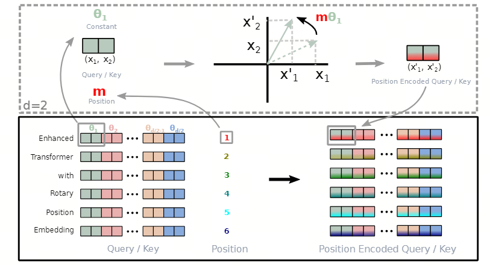
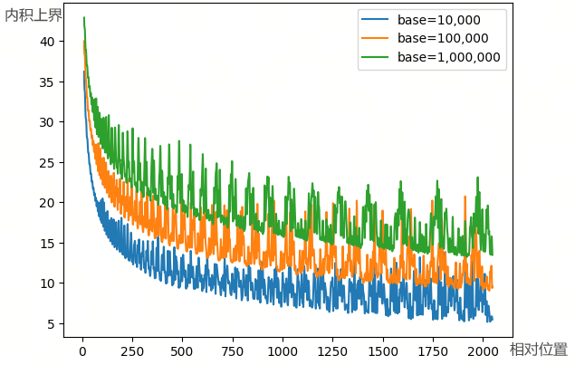
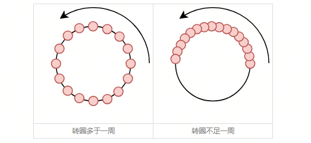

01 概述
RoPE（Rotary Position Embedding）是当前 LLM 中非常常见的位置编码方案。它通过对 query/key 的成对维度施加旋转，将 token 的绝对位置信息注入注意力计算，并在内积中自然体现相对位置关系。
本文按“公式推导、代码实现、性质分析、长度外推”的顺序梳理 RoPE：先说明旋转矩阵如何把绝对位置转化为相对位置依赖，再讨论远程衰减、base 对长文本能力的影响，以及 PI、NTK-aware、NTK-by-parts、YARN 等外推策略的动机与实现。
02 公式推导
旋转位置编码（Rotary Position Embedding, RoPE）的基本思路，是在向量空间中借助向量旋转，等价实现：
从而以乘性绝对位置编码的形式，向 attention 计算中引入 token-wise 相对位置的信息。
假设：
其中 \((\boldsymbol{q}_m, \boldsymbol{k}_n)\) 分别表示 \((\boldsymbol{q}, \boldsymbol{k})\) 中 token 位置为 \((m,n)\) 的分量。RoPE 的做法是沿 axis=-1，将 \(\boldsymbol{q}_m=(q_0,q_1,\dots,q_{d-2},q_{d-1})\) 两两视为一组向量 \(\boldsymbol{q}_{m,i}=(q_i,q_{i+1})\)，并根据当前 token 的绝对位置 \(m\) 进行旋转变换：

通过与当前 token 绝对位置有关的向量旋转 \((R_m,R_n)\)，我们成功向原先位置不敏感的 \((\boldsymbol{q}, \boldsymbol{k})\) 引入了绝对位置信息。基于 \((\tilde{\boldsymbol{q}}_m, \tilde{\boldsymbol{k}}_n)\)，进一步通过内积计算注意力分数：
结合旋转矩阵的性质 \(R_a^T=R_{-a}\)、\(R_{a+b}=R_aR_b\)，可得：
将上式完整表达为：
考虑到旋转矩阵是极度稀疏的矩阵，在实现时一般会使用更加高效的计算方式：
其中旋转频率沿用了 Sinusoidal 绝对位置编码中的算法，以确保 RoPE 的远程衰减特性：
03 代码实现
基于 LLaMA 代码给出一份 RoPE 的典型实现范例。
首先基于模型超参，生成三角函数值。由于这些值是常量，可以在训练阶段缓存并长期使用：
class LlamaRotaryEmbedding(nn.Module):
def __init__(self, dim, max_position_embeddings=2048, base=10000, device=None, scaling_factor=1.0):
super().__init__()
self.scaling_factor = scaling_factor
self.dim = dim
self.max_position_embeddings = max_position_embeddings
self.base = base
inv_freq = 1.0 / (self.base ** (torch.arange(0, self.dim, 2, dtype=torch.int64).float().to(device) / self.dim))
self.register_buffer("inv_freq", inv_freq, persistent=False)
# For BC we register cos and sin cached
self.max_seq_len_cached = max_position_embeddings
t = torch.arange(self.max_seq_len_cached, device=device, dtype=torch.int64).type_as(self.inv_freq)
t = t / self.scaling_factor
freqs = torch.outer(t, self.inv_freq)
# Different from paper, but it uses a different permutation in order to obtain the same calculation
emb = torch.cat((freqs, freqs), dim=-1)
self.register_buffer("_cos_cached", emb.cos().to(torch.get_default_dtype()), persistent=False)
self.register_buffer("_sin_cached", emb.sin().to(torch.get_default_dtype()), persistent=False)
@property
def sin_cached(self):
logger.warning_once(
"The sin_cached attribute will be removed in 4.39. Bear in mind that its contents changed in v4.38. Use "
"the forward method of RoPE from now on instead. It is not used in the `LlamaAttention` class"
)
return self._sin_cached
@property
def cos_cached(self):
logger.warning_once(
"The cos_cached attribute will be removed in 4.39. Bear in mind that its contents changed in v4.38. Use "
"the forward method of RoPE from now on instead. It is not used in the `LlamaAttention` class"
)
return self._cos_cached
@torch.no_grad()
def forward(self, x, position_ids):
# x: [bs, num_attention_heads, seq_len, head_size]
inv_freq_expanded = self.inv_freq[None, :, None].float().expand(position_ids.shape[0], -1, 1)
position_ids_expanded = position_ids[:, None, :].float()
# Force float32 since bfloat16 loses precision on long contexts
# See https://github.com/huggingface/transformers/pull/29285
device_type = x.device.type
device_type = device_type if isinstance(device_type, str) and device_type != "mps" else "cpu"
with torch.autocast(device_type=device_type, enabled=False):
freqs = (inv_freq_expanded.float() @ position_ids_expanded.float()).transpose(1, 2)
emb = torch.cat((freqs, freqs), dim=-1)
cos = emb.cos()
sin = emb.sin()
return cos.to(dtype=x.dtype), sin.to(dtype=x.dtype)然后对 q/k 附加乘性绝对位置编码。为了便于操作，实现时一般直接对半切分，而非奇偶分：
def rotate_half(x):
"""Rotates half the hidden dims of the input."""
x1 = x[..., : x.shape[-1] // 2]
x2 = x[..., x.shape[-1] // 2 :]
return torch.cat((-x2, x1), dim=-1)
def apply_rotary_pos_emb(q, k, cos, sin, position_ids=None, unsqueeze_dim=1):
"""Applies Rotary Position Embedding to the query and key tensors.
Args:
q (`torch.Tensor`): The query tensor.
k (`torch.Tensor`): The key tensor.
cos (`torch.Tensor`): The cosine part of the rotary embedding.
sin (`torch.Tensor`): The sine part of the rotary embedding.
position_ids (`torch.Tensor`, *optional*):
Deprecated and unused.
unsqueeze_dim (`int`, *optional*, defaults to 1):
The 'unsqueeze_dim' argument specifies the dimension along which to unsqueeze cos[position_ids] and
sin[position_ids] so that they can be properly broadcasted to the dimensions of q and k.
Returns:
`tuple(torch.Tensor)` comprising of the query and key tensors rotated using the Rotary Position Embedding.
"""
cos = cos.unsqueeze(unsqueeze_dim)
sin = sin.unsqueeze(unsqueeze_dim)
q_embed = (q * cos) + (rotate_half(q) * sin)
k_embed = (k * cos) + (rotate_half(k) * sin)
return q_embed, k_embed04 RoPE 的远程衰减
为了更好地分析远程衰减特性，可以将 RoPE 表示为复数形式，并将向量旋转以复数乘法的方式表示为：
由于 \(\langle \boldsymbol{a}, \boldsymbol{b}\rangle = \operatorname{Re}[\boldsymbol{a}\boldsymbol{b}^*]\)，因此：
拓展到一般情况：
不妨记 \(h_i=\boldsymbol{q}_{m,2i}\boldsymbol{k}_{n,2i}^*\)，\(S_j=\sum_{i=0}^{j} e^{i(m-n)\theta_i}\)，并约定 \(h_{d/2}=0, S_0=0\)，则可以基于 Abel 变换将上式转变为如下形式：
从而：
通过考察上界 \(\sum_{i=0}^{d/2-1}|S_{i+1}|\)，可以观测 attention score 与相对位置的关系。注意力分数呈现明显的远程衰减特性，即 LLM 能够天然地对临近 token 赋予更多注意力、对更远 token 赋予更少注意力。
此外，不同的 base 呈现不同的衰减趋势：越大的 base 衰减越慢、衰减区间越长，具备更好的长文本处理能力；但相应地，转速越慢、相邻 token 的间距越小，也需要更充分的训练以区分位置关系。

除了明显的衰减趋势之外，图中还呈现一定的震荡现象。然而，曲线表达的是注意力分数上界与相对位置的关系；实际上模型可以通过训练使衰减曲线更加平滑。但在训练区间之外，震荡性质就无法保证了，所以这也是 RoPE 无法长度外推到任意距离的主要原因。
05 RoPE 与外推
当预测阶段文本长度 \(L_{\mathrm{inf}}\) 超过 \(L_{\mathrm{train}}\) 时（即外推），LLM 主要面临两个问题：预测时用到了没训练过的位置编码（不管绝对还是相对）；预测时注意力机制所处理的 token 数量远超训练时的数量。
目前各种外推算法主要解决的是第一个问题：通过不同缩放策略，将超出训练分布的最大相位进行压缩还原，记 \(c=L_{\mathrm{train}}/L_{\mathrm{inf}}\leq1\)。
线性插值（Positional Interpolation, PI）通过线性压缩，直接将 token 位置等比压缩，使整个维度分量的旋转速度变慢、周期变大：
NTK-aware 相比 PI 是一种非线性的缩放算法：通过对 \(\mathrm{base}\) 乘以 \(c^{\frac{d}{2-d}}\)，相当于 PI 中将常数项 \(c\) 变成了与维度有关的变量 \(c^{\frac{i}{d/2-1}}\)。
在 \(i\rightarrow0\) 的高频部分，\(c^{\frac{i}{d/2-1}}\) 的值趋向于 1，因此依赖充分训练的高频分量进行外推；在 \(i\rightarrow\frac{d}{2}-1\) 的低频部分，\(c^{\frac{i}{d/2-1}}\) 的值趋向于 \(c\)，因此依赖插值确保相位不会越界。
NTK-by-parts 在 NTK-aware 的基础上，对高频、低频做进一步区分。定义旋转周期为 \(\lambda_i=2\pi/\theta_i\)，因此维度 \(i\) 的位置编码在训练中最大转了 \(r_i=L_{\mathrm{train}}/\lambda_i\) 圈。
NTK-by-parts 额外引入超参 \((\alpha,\beta)\)：\(r_i<\alpha\) 时为低频分量，外推时更易受未经训练过的位置编码影响，因此进行线性插值；\(r_i>\beta\) 时为高频分量，旋转周期足够模型外推，因此不做处理；中间部分则基于 NTK-aware 进行外推。
YARN 在 NTK-by-parts 的基础上，对注意力分布进行了修正。由于注意力分数会随着相对距离的增加逐渐衰减，PI 或 NTK 类方法本质上都通过降低旋转频率、缩短 token 之间的相对距离实现外推，这会导致注意力分数上界整体变大、破坏注意力原有分布。
因此，一个非常直观的想法是，在调整旋转频率以外推之后，通过温度系数适当修正注意力分布：
因此可以看出，位置编码部分实际可以区分为高频域和低频域：
\(r_i>\beta\) 的高频域在训练阶段遍历多个周期，因此圆内的每个角度几乎都能得到充分训练，\(\theta_i\) 几乎不存在 OOD 问题，可以直接进行外推。此外，由于高频分量的周期性，模型只能学到相对局部的位置关系。
\(r_i<1\) 的低频域在训练阶段未转完一个周期，在 \(l>L_{\mathrm{train}}\rightarrow l\cdot\mathrm{base}^{-2i/d}>L_{\mathrm{train}}\cdot\mathrm{base}^{-2i/d}\) 时，就会导致 \(\theta_i\) 越界，因此需要通过内插压缩到原本的弧内。与高频分量不同，模型可以通过（尤其是单调区间的）低频分量的远程衰减关系，学习与第一个 token 的绝对位置关系。

因此，NTK 系列及 YARN 在内插时都基于高频外推、低频内插的准则，而 PI 对不同频段的分量等比压缩，扰乱了模型的局部分辨率，因此没经过微调的情况下往往效果很差。
06 DeepSeek-R1 的外推算法实现
DeepSeek-R1 使用了 YARN 外推算法，这也是当前较主流的外推方案。相比其他 PTM，DeepSeek 也使用了相对保守的 base 值，大概支持 10,000 个 token。
{
"rope_scaling": {
"beta_fast": 32,
"beta_slow": 1,
"factor": 40,
"mscale": 1.0,
"mscale_all_dim": 1.0,
"original_max_position_embeddings": 4096,
"type": "yarn"
},
"rope_theta": 10000
}# Inverse dim formula to find dim based on number of rotations
def yarn_find_correction_dim(
num_rotations, dim, base=10000, max_position_embeddings=2048
):
return (dim * math.log(max_position_embeddings / (num_rotations * 2 * math.pi))) / (
2 * math.log(base)
)
# Find dim range bounds based on rotations
def yarn_find_correction_range(
low_rot, high_rot, dim, base=10000, max_position_embeddings=2048
):
low = math.floor(
yarn_find_correction_dim(low_rot, dim, base, max_position_embeddings)
)
high = math.ceil(
yarn_find_correction_dim(high_rot, dim, base, max_position_embeddings)
)
return max(low, 0), min(high, dim - 1) # Clamp values just in case
def yarn_get_mscale(scale=1, mscale=1):
if scale <= 1:
return 1.0
return 0.1 * mscale * math.log(scale) + 1.0
def yarn_linear_ramp_mask(min, max, dim):
if min == max:
max += 0.001 # Prevent singularity
linear_func = (torch.arange(dim, dtype=torch.float32) - min) / (max - min)
ramp_func = torch.clamp(linear_func, 0, 1)
return ramp_func
class DeepseekV3YarnRotaryEmbedding(DeepseekV3RotaryEmbedding):
def __init__(
self,
dim,
max_position_embeddings=2048,
base=10000,
device=None,
scaling_factor=1.0,
original_max_position_embeddings=4096,
beta_fast=32,
beta_slow=1,
mscale=1,
mscale_all_dim=0,
):
self.scaling_factor = scaling_factor
self.original_max_position_embeddings = original_max_position_embeddings
self.beta_fast = beta_fast
self.beta_slow = beta_slow
self.mscale = mscale
self.mscale_all_dim = mscale_all_dim
super().__init__(dim, max_position_embeddings, base, device)
def _set_cos_sin_cache(self, seq_len, device, dtype):
self.max_seq_len_cached = seq_len
dim = self.dim
freq_extra = 1.0 / (
self.base
** (torch.arange(0, dim, 2, dtype=torch.float32, device=device) / dim)
)
freq_inter = 1.0 / (
self.scaling_factor
* self.base
** (torch.arange(0, dim, 2, dtype=torch.float32, device=device) / dim)
)
low, high = yarn_find_correction_range(
self.beta_fast,
self.beta_slow,
dim,
self.base,
self.original_max_position_embeddings,
)
inv_freq_mask = 1.0 - yarn_linear_ramp_mask(low, high, dim // 2).to(
device=device, dtype=torch.float32
)
inv_freq = freq_inter * (1 - inv_freq_mask) + freq_extra * inv_freq_mask
self.register_buffer("inv_freq", inv_freq, persistent=False)
t = torch.arange(seq_len, device=device, dtype=torch.float32)
freqs = torch.outer(t, inv_freq)
_mscale = float(
yarn_get_mscale(self.scaling_factor, self.mscale)
/ yarn_get_mscale(self.scaling_factor, self.mscale_all_dim)
)
emb = torch.cat((freqs, freqs), dim=-1)
self.register_buffer(
"cos_cached", (emb.cos() * _mscale).to(dtype), persistent=False
)
self.register_buffer(
"sin_cached", (emb.sin() * _mscale).to(dtype), persistent=False
)参考内容
Transformer 升级之路：2、博采众长的旋转式位置编码
Transformer 升级之路：18、RoPE 的底数设计原则
Transformer 升级之路：7、长度外推性与局部注意力
LLM（廿三）：LLM 中的长文本问题
LLM 细节盘点(2)：位置编码